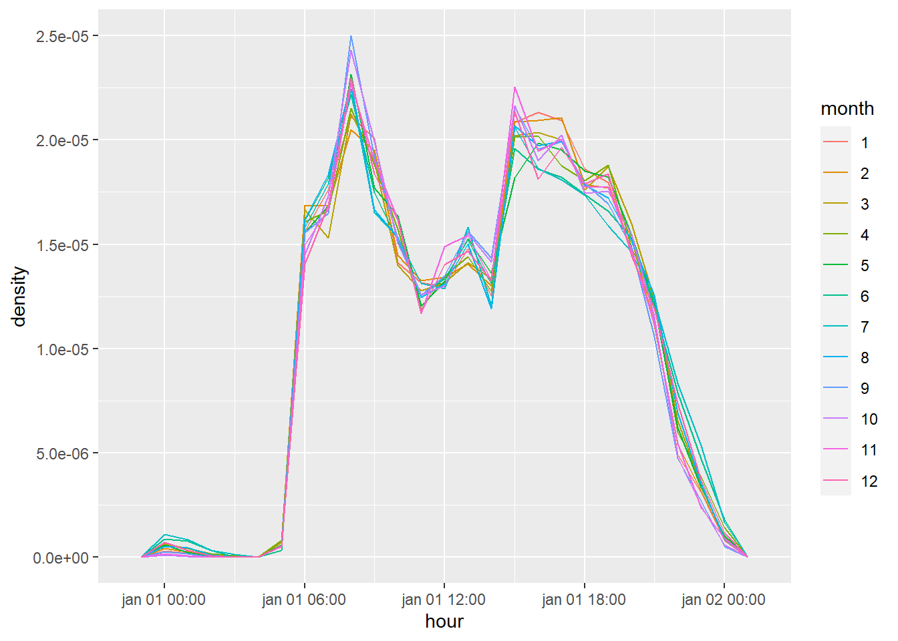
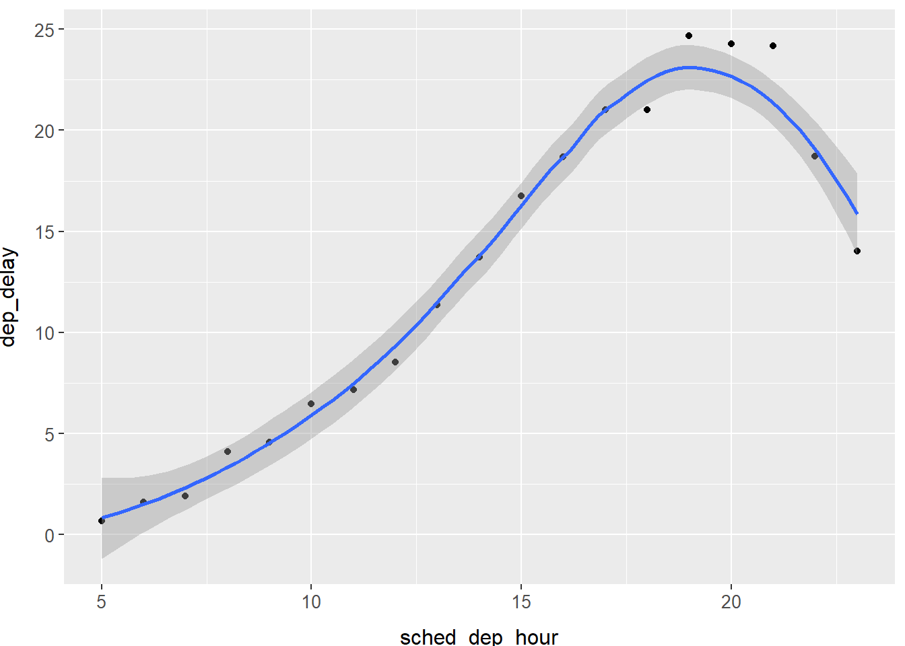
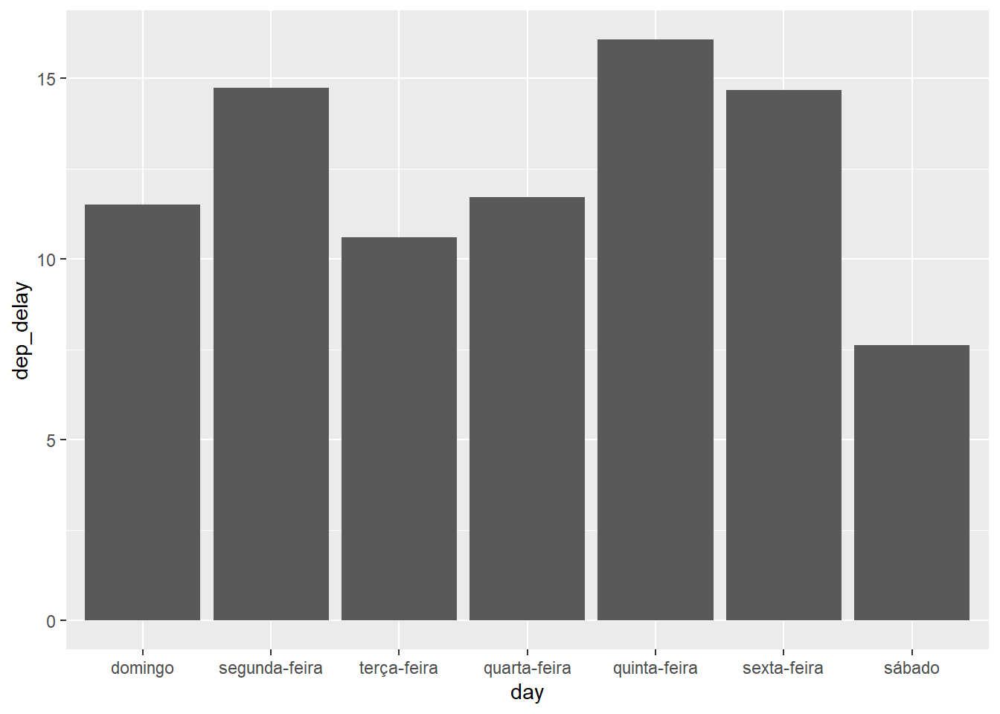
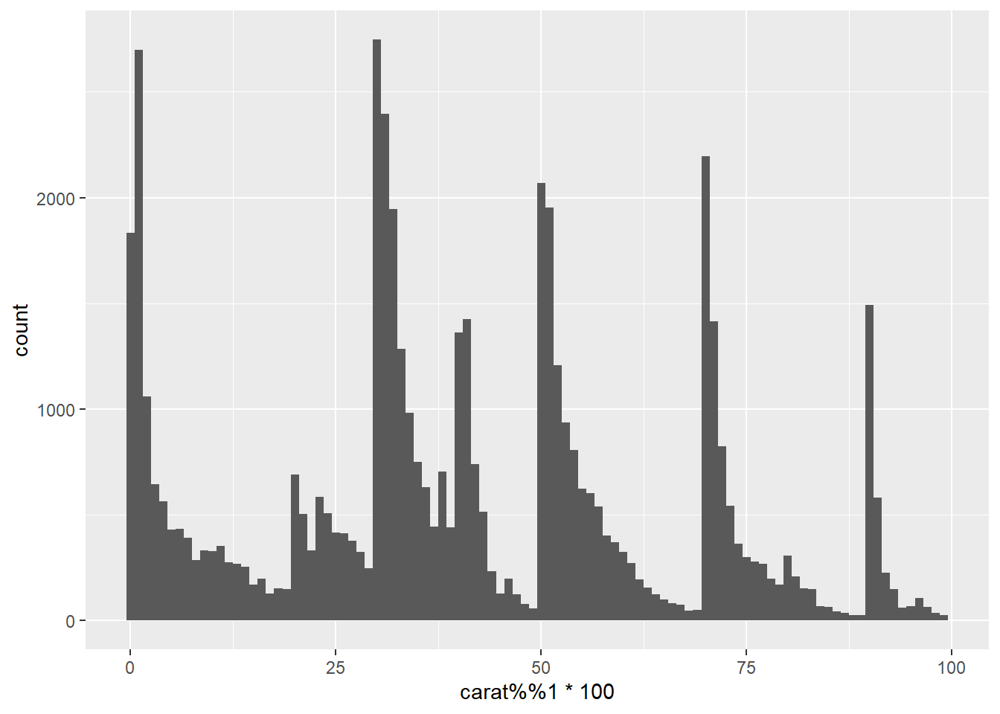
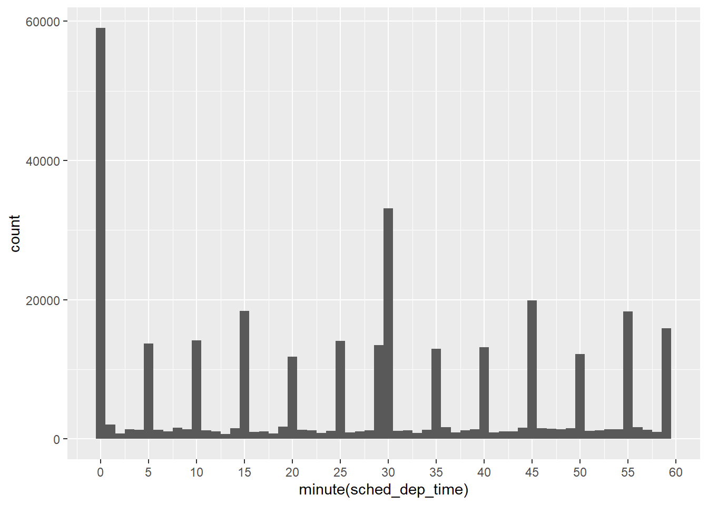

Capítulo 13 Datas e horas com lubridate
No decorrer deste capítulo, utilizaremos o seguinte código como base:
make_datetime_100 <- function(year, month, day, time) {
make_datetime(year, month, day, time %/% 100, time %% 100)
}
flights_dt <- flights %>%
filter(!is.na(dep_time), !is.na(arr_time)) %>%
mutate(
dep_time = make_datetime_100(year, month, day, dep_time),
arr_time = make_datetime_100(year, month, day, arr_time),
sched_dep_time = make_datetime_100(year, month, day, sched_dep_time),
sched_arr_time = make_datetime_100(year, month, day, sched_arr_time)
) %>%
select(origin, dest, ends_with("delay"), ends_with("time"))13.2 Criando data/horas
Exercício 13.2.1
O que acontece se você analisar uma string que contenha datas inválidas?
ymd(c("2010-10-10", "bananas"))Exercício 13.2.2
O que o argumento tzone para today() faz? Por que ele é importante?
Solução. O argumento serve para determinar a timezone. Como em diferentes partes do mundo podemos ter datas diferentes, o valor de today() pode ser diferente do esperado.
13.3 Componentes de data-hora
Exercício 13.3.1
Como a distribuição dos tempos de voo dentro de um dia mudam ao longo do curso do ano?
Solução. Para avaliar o cenário, vamos recorrer ao data set flights_dt e criar duas novas variáveis. A primeira contém apenas a hora do dia (utilizamos a função mutate() para levar todas as datas ao primeiro dia do ano) e a segunda conterá o mês. Em seguida, plotaremos o gráfico mostrando a densidade por hora, agrupado pelo mês.
flights_dt %>%
filter(!is.na(dep_time)) %>%
mutate(hour = update(dep_time, yday = 1)) %>%
mutate(month = factor(month(dep_time))) %>%
ggplot(aes(
x = hour,
y = ..density..,
color = month
)) +
geom_freqpoly(binwidth = 60 * 60)
Notamos que não há grandes variações durante o ano. A quantidade de voos a cada hora é aproximadamente constante durante todo o ano.
Exercício 13.3.2
Compare dep_time, sched_dep_time e dep_delay. São consistentes? Explique suas descobertas.
Solução. Consideraremos os dados consistentes se eles satisfizerem dep_time = sched_dep_time + dep_delay.
flights_dt %>%
filter(!is.na(dep_time)) %>%
mutate(calc_dep_time = sched_dep_time + dep_delay * 60) %>%
filter(dep_time != calc_dep_time) %>%
select(dep_time, sched_dep_time, dep_delay, calc_dep_time) %>%
arrange(desc(dep_delay))## # A tibble: 1,205 × 4
## dep_time
## <dttm>
## 1 2013-01-09 06:41:00
## 2 2013-06-15 14:32:00
## 3 2013-01-10 11:21:00
## 4 2013-09-20 11:39:00
## 5 2013-07-22 08:45:00
## 6 2013-04-10 11:00:00
## 7 2013-06-27 09:59:00
## 8 2013-12-05 07:56:00
## 9 2013-05-03 11:33:00
## 10 2013-01-01 08:48:00
## # ℹ 1,195 more rows
## # ℹ 3 more variables:
## # sched_dep_time <dttm>,
## # dep_delay <dbl>,
## # calc_dep_time <dttm>Parece que a variável dep_time contém a hora correta, mas não a data. Vamos confirmar essa hipótese movendo todos as horas para o mesmo dia e recalcular a diferença.
flights_dt %>%
filter(!is.na(dep_time)) %>%
mutate(
calc_dep_time = sched_dep_time + dep_delay * 60,
dep_time_2 = update(dep_time, year = 2013, month = 1, day = 1),
calc_dep_time_2 = update(calc_dep_time, year = 2013, month = 1, day = 1)
) %>%
filter(dep_time_2 != calc_dep_time_2) %>%
select(dep_time, dep_time_2, calc_dep_time, calc_dep_time_2, dep_delay) %>%
arrange(desc(dep_delay))## # A tibble: 0 × 5
## # ℹ 5 variables:
## # dep_time <dttm>,
## # dep_time_2 <dttm>,
## # calc_dep_time <dttm>,
## # calc_dep_time_2 <dttm>, …De fato, não há nenhum voo cuja hora real de decolagem seja diferente do nosso cálculo. Sendo assim, a única inconsistência é que a data real da decolagem não foi ajustada nos casos em que o atraso fez o voo sair apenas no dia seguinte.
Exercício 13.3.3
Compare air_time com a duração entre a partida e a chegada. Explique seus resultados. (Dica: considere a localização do aeroporto.)
Solução. Inicialmente vamos calcular a difernça entre a partida e a chegada.
flights_dt %>%
filter(!is.na(dep_time)) %>%
mutate(
calc_dep_time = sched_dep_time + dep_delay * 60,
flight_duration = arr_time - dep_time,
diff = flight_duration - air_time
) %>%
select(origin, dest, dep_time, calc_dep_time, arr_time, air_time, flight_duration, diff) %>%
arrange(diff)## # A tibble: 328,063 × 8
## origin dest
## <chr> <chr>
## 1 EWR HNL
## 2 EWR SFO
## 3 EWR SFO
## 4 EWR PHX
## 5 EWR SEA
## 6 JFK LAX
## 7 EWR SAN
## 8 JFK LAS
## 9 EWR LAS
## 10 JFK PDX
## # ℹ 328,053 more rows
## # ℹ 6 more variables:
## # dep_time <dttm>,
## # calc_dep_time <dttm>,
## # arr_time <dttm>,
## # air_time <dbl>, …Notamos que existem alguns voos para os quais flights_duration é negativa. Esse problema parece estar relacionado à inconsistência apontada no exercício anterior, que ocorre tanto navariável dep_time, quanto na variável arr_time. Vamos tentar resolver o problema ajustando a data de chegada.
flights_dt %>%
filter(!is.na(dep_time)) %>%
mutate(
calc_dep_time = sched_dep_time + dep_delay * 60,
calc_arr_time = if_else(arr_time <= calc_dep_time, arr_time + (24*60*60), arr_time),
flight_duration = calc_arr_time - calc_dep_time,
diff = flight_duration - air_time
) %>%
select(origin, dest, , calc_dep_time, calc_arr_time, air_time, flight_duration, diff) %>%
arrange(diff)## # A tibble: 328,063 × 7
## origin dest
## <chr> <chr>
## 1 JFK HNL
## 2 JFK HNL
## 3 JFK HNL
## 4 EWR HNL
## 5 JFK HNL
## 6 EWR HNL
## 7 EWR HNL
## 8 EWR HNL
## 9 JFK HNL
## 10 EWR HNL
## # ℹ 328,053 more rows
## # ℹ 5 more variables:
## # calc_dep_time <dttm>,
## # calc_arr_time <dttm>,
## # air_time <dbl>,
## # flight_duration <drtn>, …Exercício 13.3.4
Como o tempo médio de atraso muda ao longo do dia? Você deveria usar dep_time ou sched_dep_time? Por quê?
Solução. Para avaliar este cenário, iremos verificar o atraso nos voos agrupando-os pela hora de decolagem agendada.
flights_dt %>%
mutate(
sched_dep_hour = hour(sched_dep_time)
) %>%
group_by(sched_dep_hour) %>%
summarise(dep_delay = mean(dep_delay)) %>%
ggplot(aes(x = sched_dep_hour, y = dep_delay)) +
geom_point() +
geom_smooth() +
tema## `geom_smooth()` using method = 'loess' and formula = 'y ~ x'
Na média, os maiores atrasos ocorrem entre o final da tarde e início da noite.
Exercício 13.3.5
Em que dia da semana você deve partir se quiser minimizar a chance de uma atraso?
Solução. Para solucionar este caso, vamos identificar o dia da semana de cada voo, realizar o agrupamento e calcular a média em cada grupo.
flights_dt %>%
mutate(day = wday(sched_dep_time, label = TRUE, abbr = FALSE)) %>%
group_by(day) %>%
summarise(dep_delay = mean(dep_delay)) %>%
ggplot(aes(day, dep_delay)) +
geom_col() O melhor dia para viajar é no sábado!
Exercício 13.3.6
O que torna as distribuições de diamonds$carat e flights$sched_dep_time simnilares?
Solução. Em primeiro lugar iremos plotar ambas as distribuições para avaliá-las melhor.

flights_dt %>%
ggplot(aes(x = minute(sched_dep_time))) +
geom_histogram(binwidth = 1) +
scale_x_continuous(breaks = seq(0, 60, 5))
Em ambos os casos, percebemos uma concentração de observações em um determinado valor (os picos nos gráficos). Isso se deve ao fato de humanos terem uma predileção por valores arredondados.
13.4 Intervalos de tempo
Exercício 13.4.1
Por que há months() e não dmonths()?
Solução. Não faz muito sentido haver uma função dmonths() porque há muitas variações. Alguns meses tem 28, 29, 30 ou 31 dias.
Exercício 13.4.2
Explique days(overnight * 1) para alguém que acabou de começar a aprender R. Como isso funciona?
Solução. A função days() retorna uma quantidade de dias. O argumento recebido é um produto entre overnight (que indica se o vôo decola antes da meia noite e chega ao destino depois da meia noite, assumindo os valores 0 ou 1, respectivamente) e 1. Dessa forma, a depender do valor de overnight, adicionaremos ou não um dia à data de decolagem/pouso.
Exercício 13.4.3
Crie um vetor de datas dando o primeiro dia de cada mês em 2015. Crie um vetor de datas dando o primeiro dia de cada mês no ano atual.
Solução. Como as funções em lubridate podem receber vetores como argumento, vamos utilizar a função months() em conjunto com o vetor 0:11.
## [1] "2015-01-01" "2015-02-01" "2015-03-01" "2015-04-01" "2015-05-01"
## [6] "2015-06-01" "2015-07-01" "2015-08-01" "2015-09-01" "2015-10-01"
## [11] "2015-11-01" "2015-12-01"Já para pegar o primeiro dia de cada mês do ano atual, utilizaremos a mesma técnica, porém usando também as funções today() e floor_date():
## [1] "2024-01-01" "2024-02-01" "2024-03-01" "2024-04-01" "2024-05-01"
## [6] "2024-06-01" "2024-07-01" "2024-08-01" "2024-09-01" "2024-10-01"
## [11] "2024-11-01" "2024-12-01"